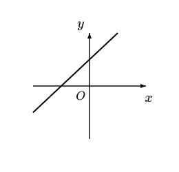

1.4점네 그래프 카드가 다음과 같다. 대칭축이 같고 폭도 같은 두 그래프를 함께 묶으려고 한다. 조건에 맞는 묶음은?카드이차함수(가)y=−2x2+1\displaystyle y=-2x^2+1y=−2x2+1(나)y=12(x−1)2−2\displaystyle y=\dfrac12(x-1)^2-2y=21(x−1)2−2(다)y=−12x2−1\displaystyle y=-\dfrac12x^2-1y=−21x2−1(라)y=2x2+3\displaystyle y=2x^2+3y=2x2+3①(가), (나)②(가), (다)③(가), (라)④(나), (다)⑤(다), (라)③각 그래프의 대칭축은 (가) x=0\displaystyle x=0x=0, (나) x=1\displaystyle x=1x=1, (다) x=0\displaystyle x=0x=0, (라) x=0\displaystyle x=0x=0이다. 이차함수 y=a(x−p)2+q\displaystyle y=a(x-p)^2+qy=a(x−p)2+q에서 그래프의 폭은 ∣a∣\displaystyle |a|∣a∣가 같으면 같고, p\displaystyle pp가 같으면 대칭축이 같다.(가)와 (라)는 모두 대칭축이 x=0\displaystyle x=0x=0이고 이차항 계수의 절댓값이 2\displaystyle 22이다. (가)와 (다), (다)와 (라)는 대칭축은 같지만 폭이 다르고, (나)와 (다)는 폭은 같지만 대칭축이 다르다. 따라서 두 조건을 모두 만족하는 묶음은 (가), (라)이므로 정답은 ③이다.
2.4점지워진 이차함수 식을 그래프 검사 메모로 복구하려고 한다. 다음 기록을 모두 만족하는 식은?검사 항목기록대칭축y\displaystyle yy축y\displaystyle yy축과 만나는 점(0,−3)\displaystyle (0,-3)(0,−3)그래프 위의 점(2,−5)\displaystyle (2,-5)(2,−5)x\displaystyle xx축과의 위치그래프 전체가 x\displaystyle xx축 아래에 있음①y=12x2−3\displaystyle y=\dfrac12x^2-3y=21x2−3②y=−12x2+3\displaystyle y=-\dfrac12x^2+3y=−21x2+3③y=−12(x−1)2−3\displaystyle y=-\dfrac12(x-1)^2-3y=−21(x−1)2−3④y=−12x2−3\displaystyle y=-\dfrac12x^2-3y=−21x2−3⑤y=−x2−3\displaystyle y=-x^2-3y=−x2−3④대칭축이 y\displaystyle yy축이고 y\displaystyle yy절편이 −3\displaystyle -3−3이므로 식을 y=ax2−3\displaystyle y=ax^2-3y=ax2−3으로 놓을 수 있다. 점 (2,−5)\displaystyle (2,-5)(2,−5)를 대입하면 −5=4a−3\displaystyle -5=4a-3−5=4a−3이므로 a=−12\displaystyle a=-\dfrac12a=−21이다.따라서 식은 y=−12x2−3\displaystyle y=-\dfrac12x^2-3y=−21x2−3이다. 모든 실수 x\displaystyle xx에 대해 x2≥0\displaystyle x^2\geq0x2≥0이므로 이 식의 그래프는 x\displaystyle xx축보다 항상 아래에 있다. ①은 아래로 열린 그래프가 아니고, ②는 y\displaystyle yy절편이 다르며, ③은 축이 다르고, ⑤는 점 (2,−5)\displaystyle (2,-5)(2,−5)를 지나지 않는다. 정답은 ④이다.
3.3점이차함수의 평행이동 기록에서 원래 식의 계수가 지워졌다.이동 전이동 후y=ax(x−4)+x2\displaystyle y=ax(x-4)+x^2y=ax(x−4)+x2y=−2(x+1)2+3\displaystyle y=-2(x+1)^2+3y=−2(x+1)2+3이동 전 그래프를 평행이동하여 이동 후 그래프와 완전히 겹치게 할 수 있다고 한다. 상수 a\displaystyle aa는?①−4\displaystyle -4−4②−3\displaystyle -3−3③−2\displaystyle -2−2④−1\displaystyle -1−1⑤1\displaystyle 11②이동 전 식을 전개하면 y=(a+1)x2−4ax\displaystyle y=(a+1)x^2-4axy=(a+1)x2−4ax이다. 평행이동을 해도 이차항의 계수는 변하지 않는다. 이동 후 식의 이차항 계수가 −2\displaystyle -2−2이므로 a+1=−2\displaystyle a+1=-2a+1=−2, 즉 a=−3\displaystyle a=-3a=−3이다.이때 이동 전 식은 y=−2x2+12x=−2(x−3)2+18\displaystyle y=-2x^2+12x=-2(x-3)^2+18y=−2x2+12x=−2(x−3)2+18이다. 이 그래프를 왼쪽으로 4\displaystyle 44, 아래로 15\displaystyle 1515만큼 평행이동하면 y=−2(x+1)2+3\displaystyle y=-2(x+1)^2+3y=−2(x+1)2+3이 되므로 실제로 겹칠 수 있다. 정답은 ②이다.
4.3점두 그래프의 대칭축 사이 위치를 기록했다. 첫 번째 그래프는 y=(x+2)2−1\displaystyle y=(x+2)^2-1y=(x+2)2−1이다. 두 번째 그래프의 대칭축은 첫 번째 그래프의 대칭축보다 오른쪽으로 6\displaystyle 66 떨어져 있다. 두 번째 그래프의 식으로 알맞은 것은?①y=2(x+8)2\displaystyle y=2(x+8)^2y=2(x+8)2②y=−(x+4)2+1\displaystyle y=-(x+4)^2+1y=−(x+4)2+1③y=12(x−2)2−3\displaystyle y=\dfrac12(x-2)^2-3y=21(x−2)2−3④y=−2(x−4)2+1\displaystyle y=-2(x-4)^2+1y=−2(x−4)2+1⑤y=3(x−6)2−2\displaystyle y=3(x-6)^2-2y=3(x−6)2−2④첫 번째 그래프의 대칭축은 x=−2\displaystyle x=-2x=−2이다. 두 번째 그래프의 축은 그보다 오른쪽으로 6\displaystyle 66 떨어져 있으므로 x=−2+6=4\displaystyle x=-2+6=4x=−2+6=4이다.보기의 대칭축은 차례로 x=−8\displaystyle x=-8x=−8, x=−4\displaystyle x=-4x=−4, x=2\displaystyle x=2x=2, x=4\displaystyle x=4x=4, x=6\displaystyle x=6x=6이다. 이차항의 계수나 꼭짓점의 높이와 관계없이 (x−p)2\displaystyle (x-p)^2(x−p)2 꼴의 그래프의 축은 x=p\displaystyle x=px=p이므로 조건에 맞는 식은 ④이다.
5.4점포물선의 세 관측 기록으로 다른 점의 좌표를 복구하려고 한다.항목기록x\displaystyle xx축과의 만남한 점에서만 만남대칭축x=2\displaystyle x=2x=2y\displaystyle yy축과 만나는 점(0,12)\displaystyle (0,12)(0,12)이 그래프 위에서 x=−1\displaystyle x=-1x=−1인 점의 y\displaystyle yy좌표는?①3\displaystyle 33②9\displaystyle 99③12\displaystyle 1212④27\displaystyle 2727⑤36\displaystyle 3636④대칭축이 x=2\displaystyle x=2x=2이고 x\displaystyle xx축과 한 점에서만 만나므로 꼭짓점은 (2,0)\displaystyle (2,0)(2,0)이다. 이차함수의 식을 y=a(x−2)2\displaystyle y=a(x-2)^2y=a(x−2)2으로 놓는다.점 (0,12)\displaystyle (0,12)(0,12)를 대입하면 12=4a\displaystyle 12=4a12=4a이므로 a=3\displaystyle a=3a=3이다. 따라서 x=−1\displaystyle x=-1x=−1일 때 y=3(−1−2)2=3×9=27\displaystyle y=3(-1-2)^2=3\times9=27y=3(−1−2)2=3×9=27이므로 정답은 ④이다.
6.4점같은 점 P\displaystyle \mathrm{P}P에 대한 두 기록을 연결해 좌표를 복구한다.기록내용포물선 기록P\displaystyle \mathrm{P}P는 y=(x−t)2+3t−2\displaystyle y=(x-t)^2+3t-2y=(x−t)2+3t−2의 꼭짓점직선 기록P\displaystyle \mathrm{P}P는 y=−2x+8\displaystyle y=-2x+8y=−2x+8 위의 점두 기록에 맞는 P\displaystyle \mathrm{P}P의 좌표는? (단, t\displaystyle tt는 상수이다.)①(−2,4)\displaystyle (-2,4)(−2,4)②(2,4)\displaystyle (2,4)(2,4)③(2,−4)\displaystyle (2,-4)(2,−4)④(4,2)\displaystyle (4,2)(4,2)⑤(2,8)\displaystyle (2,8)(2,8)②포물선 기록에서 꼭짓점 P\displaystyle \mathrm{P}P의 좌표는 (t,3t−2)\displaystyle (t,3t-2)(t,3t−2)이다. 이 점이 직선 위에 있으므로 3t−2=−2t+8\displaystyle 3t-2=-2t+83t−2=−2t+8이다.5t=10\displaystyle 5t=105t=10에서 t=2\displaystyle t=2t=2이고, P\displaystyle \mathrm{P}P의 y\displaystyle yy좌표는 3×2−2=4\displaystyle 3\times2-2=43×2−2=4이다. 따라서 P=(2,4)\displaystyle P=(2,4)P=(2,4)이다. 직선에 대입해도 −2×2+8=4\displaystyle -2\times2+8=4−2×2+8=4로 두 기록이 일치하므로 정답은 ②이다.
7.4점이차함수 y=−(x−a)2−b\displaystyle y=-(x-a)^2-by=−(x−a)2−b의 꼭짓점이 제2\displaystyle 22사분면에 있다고 한다. 이 기록에 맞는 일차함수 y=ax+b\displaystyle y=ax+by=ax+b의 그래프는? (단, a,b\displaystyle a,ba,b는 상수이다.)①②③④⑤④이차함수의 꼭짓점은 (a,−b)\displaystyle (a,-b)(a,−b)이다. 제2\displaystyle 22사분면에서는 x\displaystyle xx좌표가 음수이고 y\displaystyle yy좌표가 양수이므로 a<0\displaystyle a<0a<0, −b>0\displaystyle -b>0−b>0, 즉 b<0\displaystyle b<0b<0이다.따라서 일차함수는 오른쪽으로 갈수록 내려가며 y\displaystyle yy축의 음의 부분에서 y\displaystyle yy축을 만나야 한다. ①은 기울기와 절편이 모두 양수, ②는 절편이 양수, ③은 기울기가 양수, ⑤는 절편이 0\displaystyle 00이다. 기울기와 y\displaystyle yy절편이 모두 음수인 그래프는 ④이다.
8.3점함수 y=−2(x−3)2+1\displaystyle y=-2(x-3)^2+1y=−2(x−3)2+1의 그래프 검사표에서 두 칸이 지워졌다.항목지워진 기록대칭축(가)x\displaystyle xx가 증가할 때 y\displaystyle yy도 증가하는 범위(나)(가), (나)를 바르게 복구한 것은?①(가) x=−3\displaystyle x=-3x=−3, (나) x<−3\displaystyle x<-3x<−3②(가) x=3\displaystyle x=3x=3, (나) x>3\displaystyle x>3x>3③(가) x=−3\displaystyle x=-3x=−3, (나) x>−3\displaystyle x>-3x>−3④(가) x=3\displaystyle x=3x=3, (나) x<3\displaystyle x<3x<3⑤(가) x=1\displaystyle x=1x=1, (나) x<1\displaystyle x<1x<1④표준형 y=−2(x−3)2+1\displaystyle y=-2(x-3)^2+1y=−2(x−3)2+1의 대칭축은 x=3\displaystyle x=3x=3이다. 이차항의 계수가 음수이므로 그래프는 위로 볼록하다.이 그래프에서 꼭짓점의 왼쪽인 x<3\displaystyle x<3x<3에서는 x\displaystyle xx가 증가할수록 꼭짓점에 가까워져 y\displaystyle yy도 증가한다. 꼭짓점의 오른쪽에서는 y\displaystyle yy가 감소한다. 따라서 (가)는 x=3\displaystyle x=3x=3, (나)는 x<3\displaystyle x<3x<3이므로 정답은 ④이다.
9.4점이차함수 y=2(x−m)2+n\displaystyle y=2(x-m)^2+ny=2(x−m)2+n의 이동 기록에서 원래 꼭짓점의 좌표가 지워졌다.항목기록x\displaystyle xx축 방향 이동량−3\displaystyle -3−3y\displaystyle yy축 방향 이동량4\displaystyle 44이동한 뒤 꼭짓점(2,1)\displaystyle (2,1)(2,1)원래 식의 두 상수 m,n\displaystyle m,nm,n에 대하여 mn\displaystyle mnmn의 값은?①−20\displaystyle -20−20②−15\displaystyle -15−15③−5\displaystyle -5−5④15\displaystyle 1515⑤20\displaystyle 2020②원래 꼭짓점은 (m,n)\displaystyle (m,n)(m,n)이다. x\displaystyle xx축 방향으로 −3\displaystyle -3−3, y\displaystyle yy축 방향으로 4\displaystyle 44만큼 옮긴 뒤의 꼭짓점은 (m−3,n+4)\displaystyle (m-3,n+4)(m−3,n+4)이다.이 점이 (2,1)\displaystyle (2,1)(2,1)이므로 m−3=2\displaystyle m-3=2m−3=2, n+4=1\displaystyle n+4=1n+4=1에서 m=5\displaystyle m=5m=5, n=−3\displaystyle n=-3n=−3이다. 따라서 mn=5×(−3)=−15\displaystyle mn=5\times(-3)=-15mn=5×(−3)=−15이므로 정답은 ②이다. 원래 꼭짓점 (5,−3)\displaystyle (5,-3)(5,−3)을 왼쪽으로 3\displaystyle 33, 위로 4\displaystyle 44 옮기면 (2,1)\displaystyle (2,1)(2,1)로 실제 기록과 맞는다.